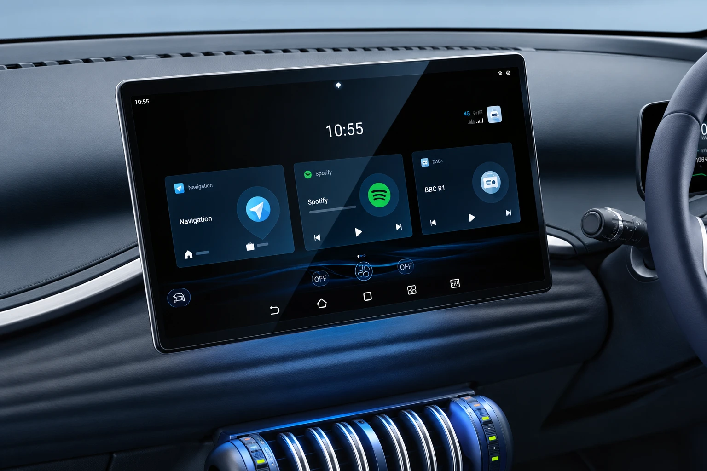
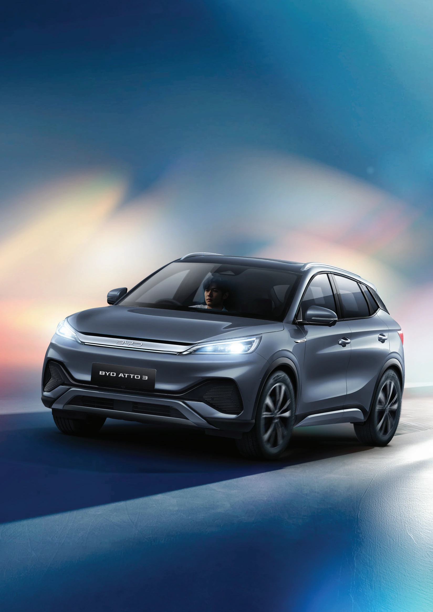
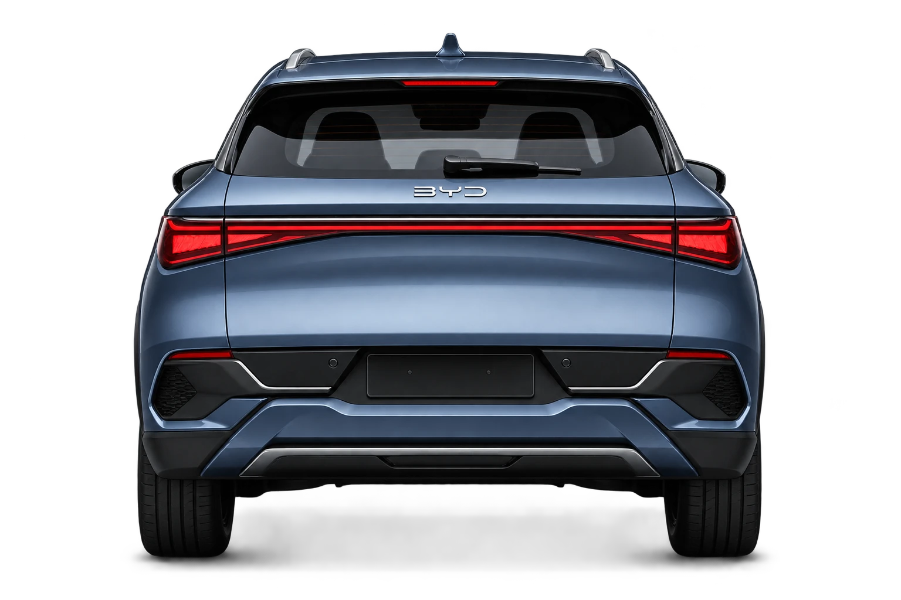
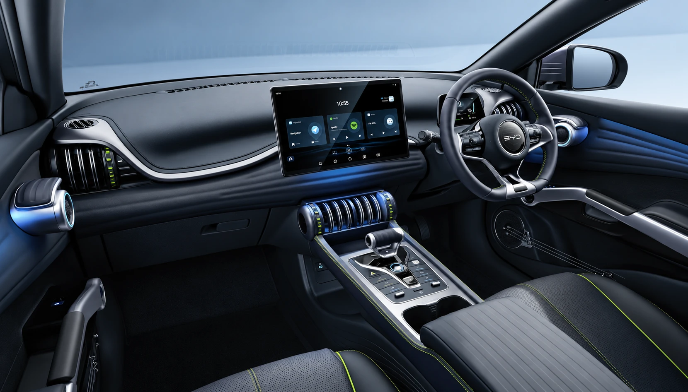
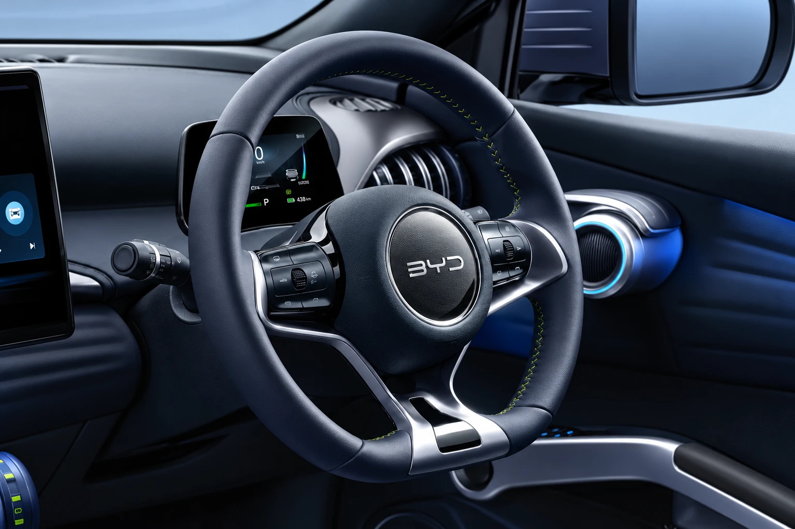
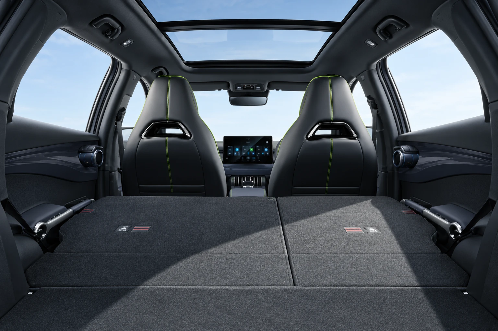
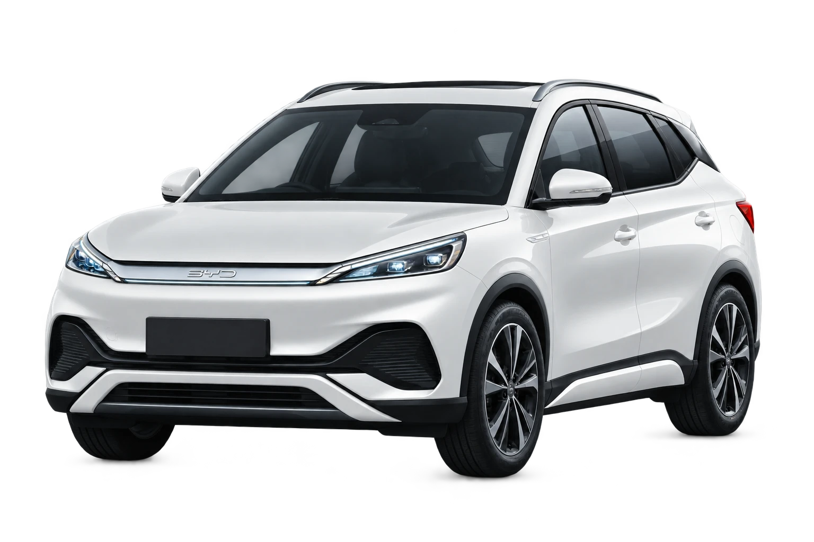

15.6 นิ้ว
หน้าจอสัมผัสระบบมัลติมีเดีย

BYD ATTO 3
ปลุกพลังเทคโนโลยีอัจฉริยะ

01 · PERFORMANCE
BYD ATTO 3ENERGY AWAKEN
ระบบขับเคลื่อนล้อหน้า พร้อมมอเตอร์ไฟฟ้ากำลังสูงสุด 150 กิโลวัตต์ และ BYD Blade Battery
¹ ตามมาตรฐาน NEDC ระยะทางจริงขึ้นอยู่กับสภาพการใช้งาน
BATTERY / CHARGING
Premium 50.25 kWh / Extended 60.48 kWh
02 · EXTERIOR
งานออกแบบอันเป็นเอกลักษณ์ ผ่านเส้นสายพลิ้วไหว
โดดเด่นในทุกมุมมอง ไฟหน้า Crystal LED และล้ออัลลอย 18 นิ้ว

LED TAILLIGHT / ATTO 3สำรวจรายละเอียดดีไซน์ของ BYD ATTO 3
03 · INTERIOR
ดีไซน์ Muscle Streamline และช่องแอร์รูปทรงดรัมเบล
พร้อมสวิตช์เกียร์ Finger-Touched Electronic Shift

หน้าจอสัมผัสระบบมัลติมีเดีย

หน้าจอเรือนไมล์ผู้ขับขี่แบบ LCD

พื้นที่เก็บสัมภาระด้านท้ายสูงสุด
พนักพิงหลังพับแบบ 60/40

เบาะผู้ขับขี่ปรับไฟฟ้า 6 ทิศทาง และเบาะผู้โดยสารด้านหน้าปรับไฟฟ้า 4 ทิศทาง พร้อมฟังก์ชันระบายอากาศและที่ชาร์จโทรศัพท์ไร้สาย
ทั้งสองรุ่นมีช่องปรับอากาศสำหรับผู้โดยสารด้านหลัง และ BYD Digital Key⁵ / NFC Card
04 · ADAS
เทคโนโลยีความปลอดภัยขั้นสูง ให้คุณมั่นใจทุกสถานการณ์
ภาพประกอบเพื่ออธิบายระบบเท่านั้น ระบบช่วยขับขี่ไม่สามารถทดแทนความรับผิดชอบของผู้ขับขี่ได้ ระบบในส่วนนี้มีทั้ง Premium และ Extended
05 · SPECIFICATIONS
06 · COLORS
เลือกสีที่เป็นตัวคุณ
Premium / Extended

สีขาว
BYD ATTO 3สีที่แสดงเป็นเพียงแนวทาง อาจแตกต่างจากสีรถจริง Surge White และ Harbour Grey มีทั้งสองรุ่น ส่วน Quantum Black และ Space Grey มีในรุ่น Extended
ENERGY AWAKEN
BYD PI-R MOTOR
ติดต่อ พายอาร์ มอเตอร์
สอบถามข้อมูลรถยนต์และนัดหมายทดลองขับ